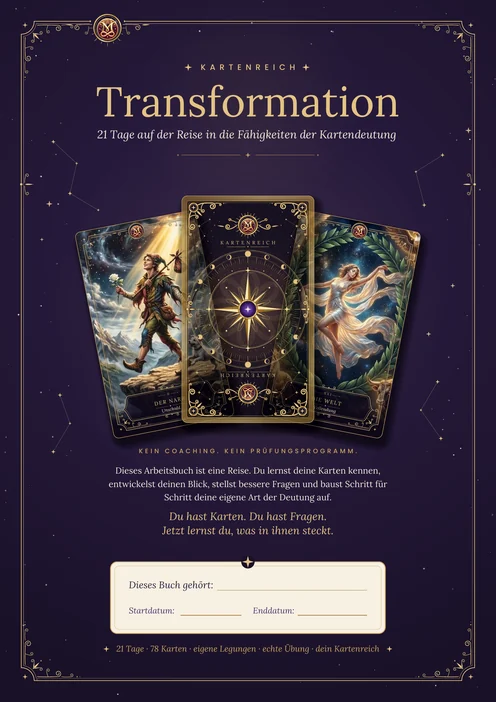
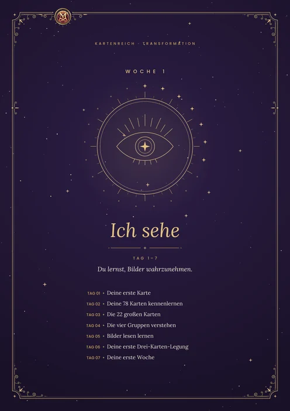
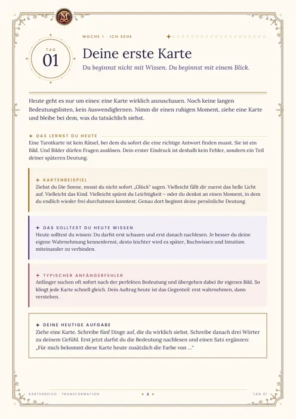
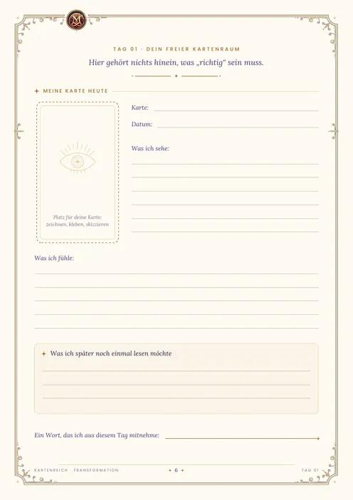

Eigens gemalt, mit feiner Goldlinie und einem eigenen Kernwort auf jeder Karte. Du begegnest ihnen in der Legung, im Lexikon und Tag für Tag im Programm.
Wische durch die Karten · tippe für die große Ansicht
So funktioniert es
In drei Schritten zu deiner eigenen Deutung
1Kostenlos legenZiehe drei Karten für gestern, heute und morgen. Ohne Anmeldung, sofort.
221 Tage übenJeden Tag eine Aufgabe, eine Karte, drei Fragen und Platz für dein Tagebuch.
3Selbst deutenAm Ende liest du deine Karten mit deinen eigenen Worten.
Tag 1–7Ich seheDu lernst, Bilder wahrzunehmen.
Tag 8–14Ich versteheDu erkennst Zusammenhänge.
Tag 15–21Ich entscheideDu nutzt die Karten für deine Fragen.
„Nicht die Karten entscheiden. Du entscheidest.“
Dein Tagebuch
71 Seiten nur für dich
Das Arbeitsbuch begleitet jeden Tag: Erklärung, Kartenbeispiel, Aufgabe, drei Fragen und ein freier Kartenraum zum Zeichnen und Schreiben. Zum Ausdrucken oder Ausfüllen am Tablet.

Titelseite

Woche 1

Tag 1

Kartenraum
Jeder Tag mit Aufgabe und drei Fragen
Ein freier Kartenraum pro Tag
Bilanz, Lieblingslegungen und Erinnerungsseite
Die 21-Tage-Transformation
Alles, was du brauchst
89,90 €einmalig · kein Abo · 90 Tage Zugang
21-Tage-ProgrammWoche für Woche freigeschaltet
Deck & KartenlexikonAlle 78 Karten mit Deutung und deinen Notizen
Arbeitsbuch71 Seiten als PDF zum Ausdrucken
9 LegemethodenVom ersten Ziehen bis zur großen Legung
Orakel & KartenkreisDeine Tagesbotschaft und Karten für deine Liebsten
Überall dabeiiPhone, Android, Mac und PC, als App installierbar
Nach dem Kauf erhältst du deinen Zugangscode und trittst sofort in deinen Transformationsraum ein.
✦ Seit 1410 · Wahrzeichen von Prag ✦
Der Prager Orloj
Die Astronomische Uhr am Altstädter Rathaus
Seit über 600 Jahren ein Wahrzeichen Prags und die älteste noch laufende astronomische Uhr der Welt. Sie zeigt Sonne, Mond und Tierkreis. Dein Orloj läuft live mit, und die Scheibe darunter zählt deine 21 Tage.
☉ Sonne im Zeichen ☾ Altböhmische Zeit
Mehr über KartenreichIdee, Zeitstrahl, Mindset und Start-Ritual
Was Kartenreich ist
Diese Seite begleitet dich 21 Tage lang. Jeden Tag bekommst du eine verständliche Erklärung, ein Kartenbeispiel, eine konkrete Aufgabe, drei Fragen und Platz für dein Tagebuch. Tarot ist dabei dein Spiegel: Die Karten sagen nicht die Zukunft voraus, sie zeigen dir Gedankenmuster und geben dir bessere Fragen. Du übernimmst die Regie, die Karten liefern die Bilder.
Ein spielerischer Weg, Tarot zu lernen. Ein persönlicher Reflexionsraum. Eine tägliche Übung. Ein Journal. Eine Reise durch 78 Bilder. Du musst nicht alles wissen, um anzufangen. Hinweis: Tarot dient der Reflexion und ersetzt keine medizinische, rechtliche oder finanzielle Beratung.
Ehrlich gesagt: Die „magische“ 21-Tage-Grenze gibt es in der Forschung nicht. Wie lange eine neue Gewohnheit braucht, ist individuell. 21 Tage sind ein starker, überschaubarer Rahmen, in dem du Routine und Selbstvertrauen aufbaust.
Dein Versprechen an dich selbst
Ich nehme mir jeden Tag Zeit für meine Karten. Ich schaue hin, ich deute mit eigenen Worten, und ich treffe meine Entscheidungen selbst.
Zeitstrahl deiner Transformation
Das erwartet dich, wenn du dranbleibst. Es sind Erfahrungswerte aus dem Lernen und Üben, keine Garantien.
„Die Karte gibt dir kein Urteil. Sie hält dir einen Spiegel hin und wartet, was du siehst.“Kartenreich · Mindshift
Dein Mindset
Vier Grundsätze tragen dich durch alle 21 Tage.
Dein Start-Ritual
Vier Schritte, bevor du Tag 1 beginnst. Sie kosten nur wenige Minuten.
Wähle dein Deck
Das Kartenreich-Deck mit allen 78 Karten ist hier schon eingebaut. Wenn du zusätzlich mit echten Karten legen möchtest, nimm ein Deck, dessen Bilder dich ansprechen.
Schaffe deinen Platz
Ein Tisch, ein Tuch, eine Kerze, ein Notizbuch. Immer derselbe Ort, immer dieselbe Zeit.
Suche Verbündete
Erzähle mindestens einer Person von deinem Plan. Oder folge unten dem WhatsApp-Kanal.
Aktiviere den Schalter
Ab dem Start öffnet sich Woche für Woche ein neuer Abschnitt mit sieben Tagen.
Dein Profil & OrakelPersönliche Angaben und deine Kartenbotschaft
Dein persönliches Profil
Deine Angaben bleiben lokal in deinem Browser. Sie dienen nur deiner Auswertung.
Gelegte Karten0
Übungsminuten0
Mindshift-Tage0
Dein Orakel
Speichere dein Profil, dann spricht das Orakel zu dir: drei Karten, die aus deinem Namen, deinem Starttag und dem heutigen Tag entstehen. Du kannst sie an deine Liebsten senden.
Dein 21-Tage-Journal zum Download
Alle 21 Tage auf Papier: zum Ausdrucken oder Ausfüllen am Tablet.
Dein 21-Tage-Weg0 / 21 Tage abgeschlossen
Kartenlexikon
Tritt ein in dein Kartenreich: 78 Bilder, die dich sanft an dich selbst erinnern. Wische oder blättere mit den Pfeilen, lass jede Karte zu dir sprechen und halte darunter fest, was sie in dir berührt.
1 / 78
✦ Kartenreich
✦ DIE 21-TAGE-TRANSFORMATION ✦
21 Tage. 78 Karten. Dein eigener Blick auf die Karten.
Du lernst Tarot nicht aus einem Buch, sondern Tag für Tag, mit Aufgabe, Karte und Tagebuch. Am Ende liest du deine Karten selbst.
89,90 €einmalig · kein Abo
Mit dem Klick lädt der sichere Kaufbereich des Shop-Anbieters (Ecwid by Lightspeed) direkt hier auf dieser Seite. Dabei werden Daten an den Anbieter übertragen.
21-Tage-ProgrammJeden Tag eine Aufgabe, ein Kartenbeispiel, drei Fragen und Platz fürs Tagebuch.
78-Karten-LexikonAlle Karten kennenlernen und eigene Bedeutungen festhalten.
9 LegemethodenVom ersten Ziehen bis zur großen Legung.
Kartenkreis & OrakelKartenprofile für Menschen, die dir wichtig sind, und deine tägliche Botschaft.
Arbeitsbuch71 Seiten zum Schreiben und Reflektieren.
Dein ZugangscodeNach dem Kauf trittst du mit deinem Code in deinen Transformationsraum ein.
KaufenDirekt hier auf dieser Seite.
Code erhaltenNach dem Kauf kommt dein Zugangscode zu dir.
EintretenCode eingeben, Tag 1 beginnt.
Tarot dient der Reflexion und ersetzt keine medizinische, rechtliche oder finanzielle Beratung. Die Zahlungs- und Bestelldaten verarbeitet der Shop-Anbieter.
89,90 € · einmalig
Über Kartenreich
Ein ruhiger Raum für deine Fragen
Kartenreich ist von Michaela Schäfer, Lebensbegleiterin aus Neuss. Fragen beantworte ich gern im WhatsApp-Kanal.
PrivatKein Konto, keine Weitergabe. Deine Angaben bleiben auf deinem Gerät.
EhrlichTarot ist hier ein Spiegel, keine Vorhersage. Entscheidungen triffst du.
EchtErfahrungsberichte erscheinen erst, wenn echte Rückmeldungen vorliegen.
Häufige Fragen
Kann man Tarot selbst lernen?
Ja. Kartenreich führt dich in 21 Tagen vom ersten Blick bis zur eigenen Legung: mit täglicher Erklärung, Übung, drei Reflexionsfragen und Platz für dein Tagebuch.
Sagt Tarot die Zukunft voraus?
Nein. Hier ist Tarot ein Spiegel: Die Karten zeigen Gedankenmuster und geben dir bessere Fragen. Entscheidungen triffst du selbst.
Brauche ich ein eigenes Kartendeck?
Nein. Das Kartenreich-Deck mit allen 78 Karten ist bereits eingebaut: in der Legung, im Lexikon und im Programm.
Was kostet Kartenreich?
Die Drei-Karten-Legung ist kostenlos, ohne Anmeldung. Die 21-Tage-Transformation mit Programm, Kartenlexikon, Arbeitsbuch, Legemethoden, Orakel und Kartenkreis kostet einmalig 89,90 € und gilt 90 Tage.
Funktioniert Kartenreich auf dem iPhone?
Ja. Kartenreich läuft im Browser auf iPhone, Android, Mac und PC. Über „Teilen“ und „Zum Home-Bildschirm“ wird es wie eine App installiert.
Was passiert mit meinen Daten?
Deine Angaben bleiben lokal auf deinem Gerät. Es gibt kein Konto, und nichts wird ohne dein Zutun weitergegeben.
Tarot lernen für AnfängerWas ist Tarot, wie ziehe ich eine Karte, welche Legung passt?
Tarot lernen für Anfänger
Was ist Tarot?
Tarot besteht aus 78 Bildkarten: 22 Große und 56 Kleine Arkana. Die Bilder erzählen von Anfängen, Entscheidungen, Krisen und Wandel. In Kartenreich nutzt du sie als Spiegel für Selbstreflexion, nicht als Wahrsagerei.
Wie ziehe ich eine Tarotkarte?
Stelle eine offene Frage, atme durch, mische und ziehe eine Karte. Schau zuerst das Bild an: Farben, Figuren, Stimmung. Erst danach liest du die Bedeutung nach und fragst dich, was die Karte mit deiner Situation zu tun hat.
Welche Legung eignet sich für Anfänger?
Die Drei-Karten-Legung mit „Was war? Was ist? Was möchte gesehen werden?“. Sie ist überschaubar und führt schnell zu eigenen Deutungen. Die Legemethoden in Kartenreich bauen darauf auf.
Kann man Tarot selbst lernen?
Ja, mit kleinen täglichen Schritten. Genau dafür ist der 21-Tage-Weg gemacht: vom ersten Blick bis zur eigenen Legung.
Deine nächste Karte wartet
Starte kostenlos oder öffne die ganze Transformation.
Deine Karten haben dich begleitet, und du hast dir selbst zugehört.
Gelegte Karten0
Übungsminuten0
Mindshift-Tage21
„Du hast 21 Tage lang hingeschaut, gedeutet und entschieden. Du bist nicht mehr die Person, die diese Seite am ersten Tag geöffnet hat. Du legst Karten, und du legst dein Leben mit eigenen Händen.“Dein Mindshift